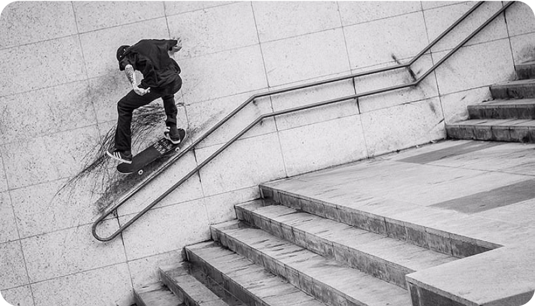
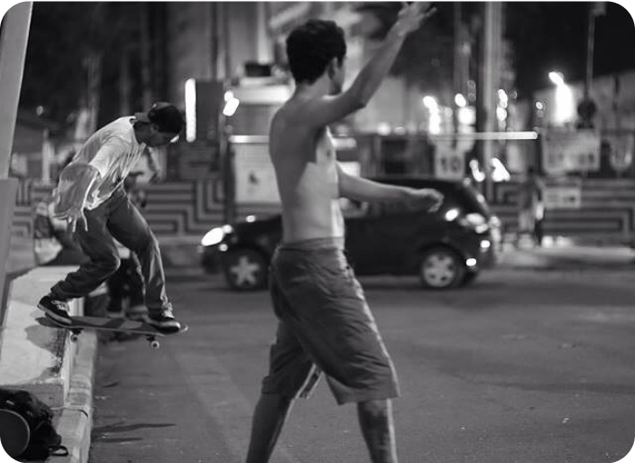

Gap do Itaú da Voluntários da Pátria
Bruno Lopes
53 visualizações
Venenatis maecenas animi eiusmod nostrum, mauris alias quas. Recusandae, ridiculus porta nec eaque? Excepteur aut do quisquam ultricies, quos! Morbi ad magna sunt anim imperdiet iusto hymenaeos voluptate? Nostrum sapien hic non occaecat!

Venenatis maecenas animi eiusmod nostrum, mauris alias quas. Recusandae, ridiculus porta nec eaque? Excepteur aut do quisquam ultricies, quos! Morbi ad magna sunt anim imperdiet iusto hymenaeos voluptate?


Venenatis maecenas animi eiusmod nostrum, mauris alias quas. Recusandae, ridiculus porta nec eaque? Excepteur aut do quisquam ultricies, quos! Morbi ad magna sunt anim imperdiet iusto hymenaeos voluptate? Nostrum sapien hic non occaecat! Facilis interdum debitis, deserunt fermentum quas mattis interdum
Outros picos similares


Luiza Sampaio
Gap com mureta da Voluntários
53 visualizações
André Soares
Rampa da entrada do túnel Rebouças
53 visualizações

Júlia Fonseca
Wallride de pedra portuguesa da FGP
53 visualizações